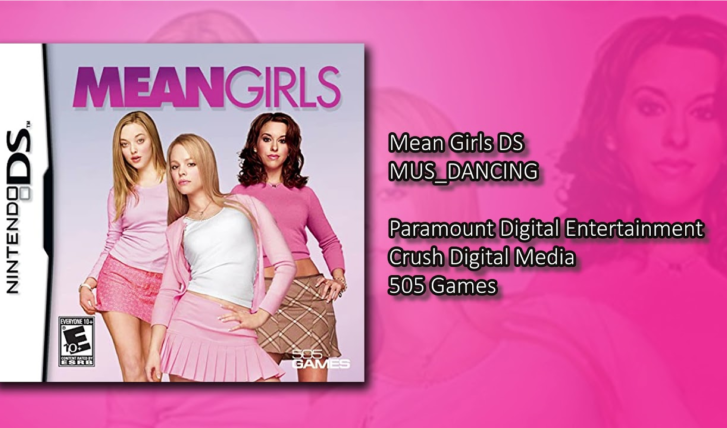
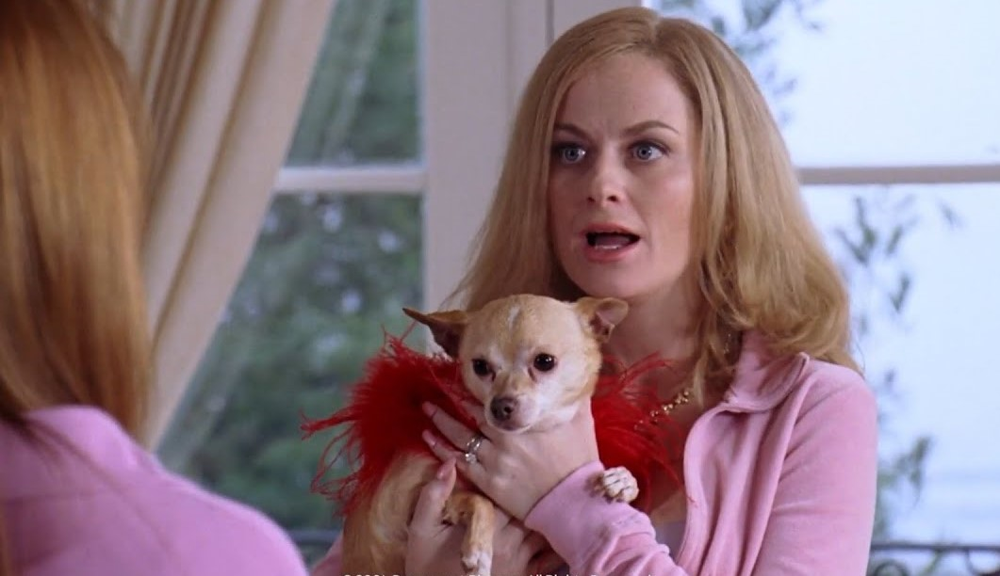
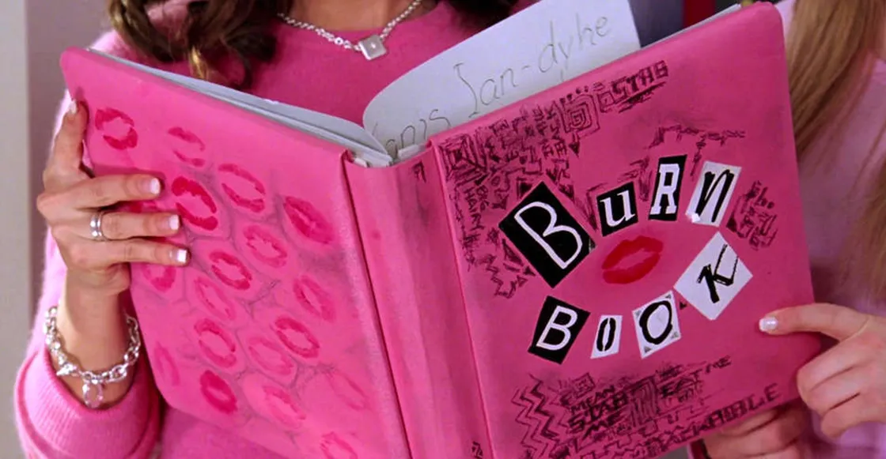
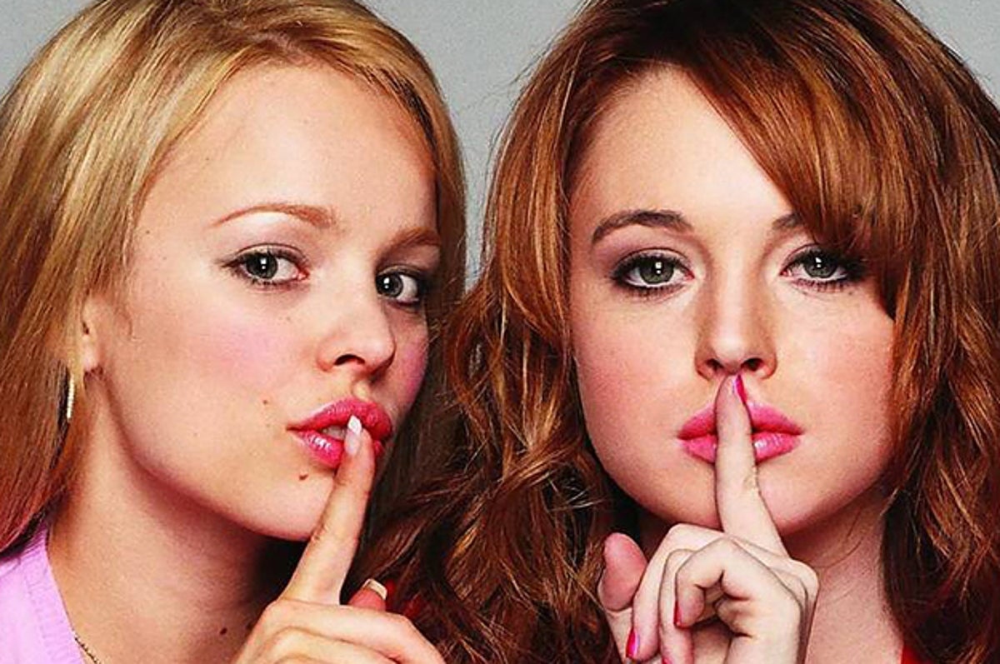

1- Existe un videojuego de la película de Chicas pesadas para PC y Nintendo DS, aunque el juego está enfocado en el personaje de Cady, su imagen fue removida del arte de la portada. Su presencia fue considerada “veneno de marketing” dado su reciente mal en aquellos años.
2- Cada 3 de octubre se celebra el Mean Girls Day para conmemorar a esta icónica pelicula, las chicas se visten de rosa y no se atan el cabello.

3- Tina Fey admitió haber sido una “chica pesada” Además de toda esa labor en el detrás de escena, Tina Fey encarnó a la profesora Norbury, un rol más que importante en el filme. Sin embargo, la actriz admitió haber sido una “chica pesada” en su época de secundaria. Ahora se entiende de dónde sacó tantas buenas ideas para el libreto.
4- Aunque a ninguna le gustaría que le sucediese, sin duda, la escena interpretada por Amy Poehler (la moderna madre de Regina George) y el chihuahua mordiendo su sujetador despertó más de una carcajada. Para lograr que el pequeño perro hiciera su trabajo, Amy debió colocar una pequeña salchicha en la prenda.
5- Existe una página que te muestra que es lo que escribirían las Mean Girls sobre ti en el "Libro del mal", consiste en un quiz que es fácil y rápido de hacer, usando este link.
6- Originalmente, Lindsay Lohan audicionó para interpretar a Cady Heron, pero otra persona le había ganado el papel, por lo que le dieron el rol de Regina George. Lindsay Lohan temía que la gente pensara que ella era mala en la vida real por su buena interpretación de Regina. Mientras tanto, Amanda Seyfried audicionó para interpretar a Regina George, pero fue descartada porque según el director "Las personas no la aceptarían como villana" y terminó interpretando a Cady Heron.
